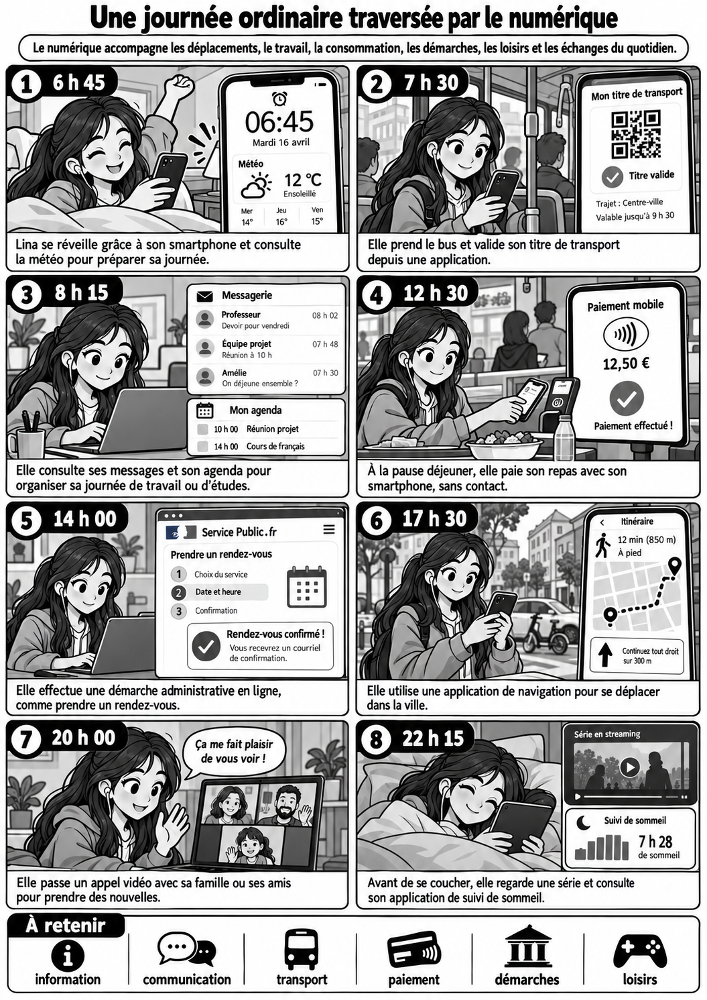
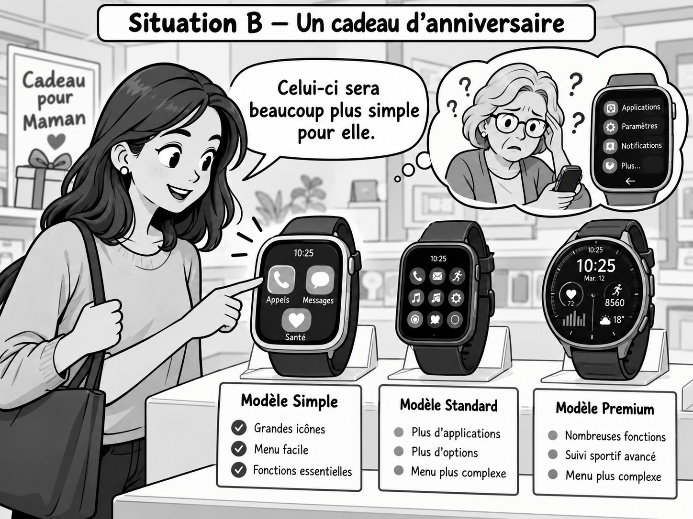
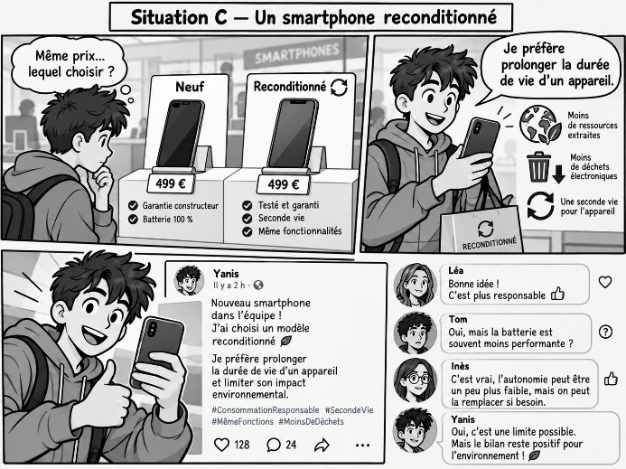
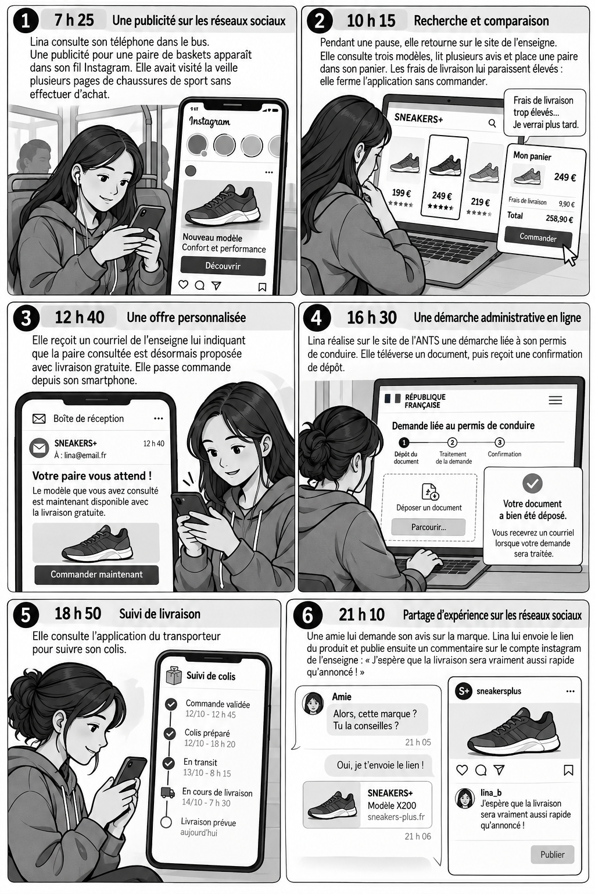

Problématique : Les technologies numériques permettent-elles toujours aux organisations de mieux connaître et satisfaire leurs clients et leurs usagers ?
Capacité visée :
☐ Décrire l’apport des technologies numériques aux relations entre l’organisation, ses clients ou ses usagers.
1. Une journée ordinaire… devenue très numérique ?
Document 1 – Une journée ordinaire traversée par le numérique
 |
Question 1
Identifiez les différents usages du numérique qui accompagnent la journée de Lina. Réponse sur feuille — reprenez le numéro de la question dans votre réponse. |
Afficher la correction
Lina utilise le numérique pour s’informer (météo), se déplacer (titre de transport et navigation), organiser son travail ou ses études (messagerie et agenda), payer, effectuer une démarche administrative, communiquer avec ses proches, se divertir (streaming) et suivre son sommeil.
Question 2
Regroupez ces usages selon les différentes dimensions de la vie quotidienne qu’ils transforment. Réponse sur feuille — reprenez le numéro de la question dans votre réponse. |
Afficher la correction
On peut regrouper ces usages en plusieurs dimensions : information, mobilité, travail/études, consommation et paiement, démarches administratives, communication, loisirs et suivi personnel.
Question 3
Montrez que le numérique ne transforme pas seulement une activité particulière, mais plusieurs dimensions de nos modes de vie. Réponse sur feuille — reprenez le numéro de la question dans votre réponse. |
Afficher la correction
Le numérique intervient tout au long de la journée et dans des activités très différentes : déplacements, organisation du travail, consommation, relations sociales, démarches publiques ou loisirs. Il transforme donc plusieurs dimensions des modes de vie et pas seulement une activité isolée.
Notion 1 – Client, consommateur et usager
Client : personne ou organisation qui achète un bien ou un service auprès d’une organisation. Consommateur : personne qui utilise un bien ou un service afin de satisfaire un besoin. Usager : personne qui utilise un service, notamment un service public ou collectif. Attention : une même personne peut avoir plusieurs statuts. Celui qui achète un cadeau est client, mais le destinataire qui l’utilise est consommateur. |
Question 4
À partir des situations du document 1, distinguez celles dans lesquelles Lina agit comme cliente, consommatrice ou usagère. Réponse sur feuille — reprenez le numéro de la question dans votre réponse. |
Afficher la correction
Lina est notamment usagère lorsqu’elle utilise les transports publics ou effectue une démarche auprès d’un service public. Elle est cliente lorsqu’elle paie un repas ou souscrit/utilise un service marchand. Elle est consommatrice lorsqu’elle utilise effectivement le bien ou le service pour satisfaire un besoin. Une même situation peut donc lui donner plusieurs statuts, par exemple cliente et consommatrice lorsqu’elle achète puis consomme son repas.
2. Comment le consommateur prend-il sa décision ?
2.1 Le processus d’achat
Document 2 – Lina choisit une nouvelle paire de chaussures
Lina veut remplacer ses chaussures de sport devenues inconfortables. Elle souhaite un modèle qu’elle puisse porter aussi bien pour marcher que pour sortir avec ses amis. Elle commence par consulter les modèles portés par plusieurs créateurs de contenu. Elle recherche ensuite des informations sur trois sites marchands et utilise un comparateur de prix. Trois modèles retiennent son attention :
Lina préfère esthétiquement le modèle C. Pourtant, elle hésite car elle doit recevoir ses chaussures avant le week-end. Elle choisit finalement le modèle B. Deux jours après la livraison, l’enseigne lui adresse une demande d’avis. Lina attribue cinq étoiles et photographie ses nouvelles chaussures pour une publication sur un réseau social. |
Question 5
Reconstituez les différentes étapes du processus d’achat suivi par Lina. Réponse sur feuille — reprenez le numéro de la question dans votre réponse. |
Afficher la correction
Le besoin apparaît lorsque les anciennes chaussures deviennent inconfortables. Lina recherche ensuite des informations, compare plusieurs modèles, prend une décision en choisissant le modèle B, réalise l’achat, puis évalue son expérience après la livraison en attribuant cinq étoiles et en publiant une photo.
Question 6
Montrez que les outils numériques interviennent à plusieurs étapes de ce processus. Réponse sur feuille — reprenez le numéro de la question dans votre réponse. |
Afficher la correction
Le numérique intervient lors de la recherche d’informations (créateurs de contenu, sites marchands, comparateur), de la comparaison (prix et avis clients), de la relation avec l’enseigne et de l’expérience post-achat (demande d’avis et publication sur un réseau social).
Question 7
Identifiez les informations du document qui ont contribué à la décision finale de Lina. Réponse sur feuille — reprenez le numéro de la question dans votre réponse. |
Afficher la correction
Lina tient compte du prix, des avis clients, du délai et du coût de livraison, du confort annoncé, de l’utilisation de matières recyclées, de sa connaissance du modèle, de ses préférences esthétiques et de son besoin de recevoir les chaussures avant le week-end. Le délai et le confort conduisent finalement au choix du modèle B.
Notion 2 – Processus d’achat
Le processus d’achat correspond aux différentes étapes parcourues par le consommateur depuis l’apparition d’un besoin jusqu’à l’évaluation de son achat après utilisation. |
À retenir 1 – Les étapes du processus d’achat
Besoin → recherche d’informations → comparaison → décision → achat → expérience post-achat |
3. Pourquoi le consommateur choisit-il un produit plutôt qu’un autre ?
3.1 Trois achats, plusieurs raisons
Document 3 – Trois achats, plusieurs raisons
Situation A — Un casque audioNoé possède déjà des écouteurs fonctionnels. Après avoir essayé le casque de son frère, il envisage néanmoins un modèle doté d’une meilleure réduction de bruit et d’un son de meilleure qualité. Il consulte plusieurs tests et affirme : « Je l’utiliserai surtout le soir. J’aime vraiment écouter mes albums tranquillement avec un très bon son. » Il apprécie particulièrement un modèle à 249 €, mais hésite longtemps à cause du prix.  Situation B — Un cadeau d’anniversaireSarah recherche une montre connectée pour l’anniversaire de sa mère. Elle compare plusieurs modèles et privilégie finalement celui dont l’écran est le plus simple à utiliser. Le modèle retenu n’est pas celui qu’elle aurait choisi pour elle-même : « Ma mère se perd vite dans les menus. Celui-ci sera beaucoup plus simple pour elle. »  Situation C — Un smartphone reconditionnéYanis doit remplacer son smartphone. Il pourrait acheter un modèle neuf au même prix, mais choisit un appareil reconditionné. Il explique : « Je préfère prolonger la durée de vie d’un appareil plutôt que d’en acheter systématiquement un neuf. C’est davantage en accord avec la manière dont j’essaie de consommer. » Plusieurs de ses amis lui signalent cependant que la batterie pourrait être moins performante que sur un appareil neuf. |
Notion 3 – Besoin, motivations et freins
Besoin : sensation de manque que l’individu cherche à satisfaire. Motivation : force qui pousse le consommateur à agir pour satisfaire son besoin. Hédoniste : acheter pour se faire plaisir ou rechercher une satisfaction personnelle. Oblative : acheter pour faire plaisir à une autre personne. D’auto-expression : acheter pour exprimer son identité, ses valeurs ou son appartenance. Frein : élément qui ralentit, reporte ou empêche l’achat. |
Question 8
Repérez, dans chacune des trois situations, les éléments qui poussent le consommateur vers l’achat et ceux qui peuvent au contraire le faire hésiter ou renoncer. Réponse sur feuille — reprenez le numéro de la question dans votre réponse. |
Afficher la correction
Noé : motivation principalement hédoniste, car il recherche le plaisir d’une meilleure qualité sonore ; le prix constitue un frein. Sarah : motivation oblative, car elle choisit la montre pour faire plaisir à sa mère et l’adapte à ses besoins. Yanis : motivation d’auto-expression, car le choix du reconditionné correspond aux valeurs qu’il souhaite exprimer ; le doute sur la batterie constitue un frein.
Question 9
Qualifiez la motivation dominante de chaque consommateur en distinguant motivation hédoniste, oblative et d’auto-expression. Justifiez chaque réponse à partir du document. Réponse sur feuille — reprenez le numéro de la question dans votre réponse. |
Afficher la correction
Une décision d’achat combine souvent plusieurs facteurs. Le consommateur peut être poussé par un besoin et une ou plusieurs motivations, tout en arbitrant avec des freins comme le prix, le délai, le risque ou la qualité attendue. Le choix final résulte donc de la combinaison de ces éléments.
Question 10
Montrez qu’une même décision d’achat peut résulter de plusieurs facteurs. Réponse sur feuille — reprenez le numéro de la question dans votre réponse. |
Afficher la correction
A : opinion positive envers l’ordinateur, mais non-achat. B : opinion plutôt négative sur la marque, mais achat grâce à la réduction. C : opinion positive confirmée par une recommandation. D : opinion positive envers le smartphone, mais abandon du panier à cause du coût des mensualités.
3.2 Attitude et comportement
Document 4 – Aimer ne signifie pas acheter
Une étude interne d’une enseigne d’électronique porte sur quatre visiteurs de son site.
|
Question 11
Comparez, pour chaque visiteur, son opinion envers le produit ou la marque et son comportement observable. Réponse sur feuille — reprenez le numéro de la question dans votre réponse. |
Afficher la correction
L’attitude oriente le comportement mais ne le détermine pas. Les visiteurs A et D ont une attitude positive sans acheter, car des freins interviennent. À l’inverse, le visiteur B achète malgré une attitude peu favorable grâce à une forte réduction.
Notion 4 – Attitude et comportement
L’attitude est une prédisposition favorable ou défavorable d’un individu envers un produit, une marque, un service ou une organisation. Le comportement est la partie observable : c’est l’action de l’individu. Attention : une attitude positive n’entraîne pas nécessairement un achat. Les freins peuvent modifier le comportement final. |
Question 12
Montrez que l’attitude d’un consommateur influence son comportement sans le déterminer systématiquement. Réponse sur feuille — reprenez le numéro de la question dans votre réponse. |
Afficher la correction
L’attitude constitue une prédisposition favorable ou défavorable, tandis que le comportement est l’action observable. Le document montre qu’un consommateur peut apprécier un produit sans l’acheter ou acheter malgré une opinion mitigée : d’autres facteurs et freins interviennent dans la décision.
4. Que savent réellement les organisations grâce au numérique ?
Document 5 – Une paire de baskets qui poursuit Lina
 |
Question 13
Repérez les principales interactions numériques entre Lina et l’enseigne au cours de la journée. Réponse sur feuille — reprenez le numéro de la question dans votre réponse. |
Afficher la correction
Les principales interactions avec l’enseigne sont la consultation antérieure de pages de baskets, l’exposition à une publicité, la recherche et la comparaison sur le site, la lecture des avis, l’ajout au panier puis son abandon, la réception d’une offre personnalisée, la commande et enfin le commentaire publié sur le compte de l’enseigne. La démarche ANTS et le suivi du transporteur concernent d’autres organisations.
Question 14
Identifiez les informations que l’enseigne peut recueillir à partir des actions de Lina et montrez comment certaines sont utilisées pour personnaliser la relation avec elle. Réponse sur feuille — reprenez le numéro de la question dans votre réponse. |
Afficher la correction
L’enseigne peut notamment recueillir les pages consultées, les produits comparés, le contenu du panier, l’abandon de la commande, l’achat réalisé et le commentaire publié. Elle utilise au moins une partie de ces informations pour adapter la relation : après la consultation et l’abandon, Lina reçoit une offre de livraison gratuite sur la paire concernée.
Question 15
Montrez que les actions observées permettent à l’organisation de mieux connaître le comportement de Lina sans connaître avec certitude ses motivations. Réponse sur feuille — reprenez le numéro de la question dans votre réponse. |
Afficher la correction
Les traces indiquent ce que Lina fait : consulter, comparer, ajouter au panier, abandonner puis acheter. Elles enrichissent donc la connaissance de son comportement. En revanche, elles ne permettent pas à elles seules d’établir avec certitude pourquoi elle agit ainsi : l’organisation peut formuler des hypothèses, mais la motivation réelle nécessite une interprétation et peut rester incertaine.
Notion 5 – Traces numériques
Les traces numériques sont les données laissées volontairement ou automatiquement lors de l’utilisation de services numériques : clics, recherches, achats, localisation, avis, temps passé sur une page, etc. |
À retenir 2 – De la trace à la décision
Les traces numériques peuvent permettre à l’organisation de collecter des données. Une fois traitées et mises en contexte, ces données deviennent des informations exploitables. Leur analyse et leur croisement avec d’autres informations peuvent enrichir la connaissance du client et éclairer les décisions de l’organisation. Attention : certaines données issues des traces renseignent sur des comportements observables, mais elles ne permettent pas toujours d’en connaître avec certitude les motivations. |
5. Comment la digitalisation transforme-t-elle la relation client ?
Document 6 – La relation client chez Sportéo
Après plusieurs années de croissance, Sportéo utilise désormais différents outils numériques. Lorsqu’un client crée un compte, ses commandes, ses demandes au service client et ses préférences déclarées sont regroupées dans une même fiche. Sur le site, un chatbot répond aux questions simples sur les horaires, la livraison ou les retours. Si la demande est plus complexe, elle est transmise à un conseiller. Le service marketing utilise l’historique d’achat pour envoyer certaines offres ciblées. Une personne ayant acheté des chaussures de randonnée peut ainsi recevoir quelques semaines plus tard une information concernant des chaussettes techniques ou un sac. Les conseillers du SAV retrouvent les commandes antérieures lorsqu’un client les contacte. Ils n’ont donc pas besoin de lui demander systématiquement de fournir à nouveau toutes ses informations. Sportéo constate cependant que certains clients se plaignent de recevoir trop de sollicitations commerciales. D’autres expliquent qu’ils préfèrent parler directement à un conseiller lorsqu’ils rencontrent un problème complexe. La direction rappelle donc aux équipes qu’un outil numérique doit faciliter la relation et non multiplier automatiquement les messages. |
Question 16
Repérez les différents outils numériques utilisés par Sportéo et associez chacun à son rôle dans la relation client. Réponse sur feuille — reprenez le numéro de la question dans votre réponse. |
Afficher la correction
Sportéo utilise un compte ou une fiche client pour regrouper les informations, un chatbot pour traiter les demandes simples, l’historique d’achat pour cibler certaines offres et l’accès partagé aux commandes pour permettre au SAV de retrouver rapidement le dossier du client.
Question 17
Montrez comment le partage et l’exploitation des informations permettent à Sportéo d’améliorer la connaissance du client et la continuité de la relation avec lui. Réponse sur feuille — reprenez le numéro de la question dans votre réponse. |
Afficher la correction
Le regroupement des commandes, demandes et préférences donne une vision plus complète du client. Le marketing peut adapter ses offres et le SAV retrouve les échanges antérieurs sans demander au client de tout répéter. Le partage des informations améliore donc à la fois la connaissance du client et la continuité entre les différents points de contact.
Question 18
Appréciez dans quelle mesure les outils numériques utilisés par Sportéo améliorent réellement la relation client. Réponse sur feuille — reprenez le numéro de la question dans votre réponse. |
Afficher la correction
Les outils numériques améliorent la relation lorsqu’ils accélèrent les réponses, personnalisent certaines offres et assurent une continuité entre services. Mais l’amélioration n’est pas automatique : des sollicitations trop nombreuses peuvent être mal perçues et un chatbot peut être insuffisant pour un problème complexe. Leur pertinence dépend donc de leur usage et du maintien d’une intervention humaine lorsque nécessaire.
Notion 6 – Digitalisation de la relation client
La digitalisation de la relation client correspond à l’utilisation des technologies numériques pour gérer et améliorer les interactions entre une organisation et ses clients.
|
Rappel 1 – Système d’information
Le système d’information regroupe les ressources humaines, matérielles, logicielles et organisationnelles permettant de collecter, stocker, traiter et diffuser l’information. |
Rappel 2 – Focus CRM : Customer Relationship Management / gestion de la relation client
Un CRM est un outil de gestion de la relation client permettant de centraliser et d’exploiter les informations relatives aux clients et aux interactions avec eux. Il facilite leur connaissance et leur suivi, mais ne garantit ni leur satisfaction ni leur fidélité. |
6. Les réseaux sociaux rendent-ils la relation plus interactive ?
Document 7 – Une publication qui échappe un peu à la marque
Question 19
Repérez les différentes formes d’interaction entre la marque et les internautes visibles dans le document. Réponse sur feuille — reprenez le numéro de la question dans votre réponse. |
Afficher la correction
Les interactions prennent plusieurs formes : la marque publie un contenu ; les internautes le regardent, l’aiment et le partagent ; ils posent des questions sur les tailles et la fabrication ; une cliente publie un avis négatif ; la marque répond publiquement puis poursuit en privé ; une créatrice publie spontanément un test ; le community manager analyse et synthétise les réactions.
Question 20
Montrez que les réseaux sociaux permettent à la marque à la fois de communiquer avec les internautes et de recueillir des informations sur leurs attentes. Réponse sur feuille — reprenez le numéro de la question dans votre réponse. |
Afficher la correction
La marque communique en publiant sa nouvelle gamme et en répondant aux internautes. En retour, les questions, commentaires, avis, partages et contenus publiés par les internautes fournissent des informations sur leurs attentes : grandes tailles, qualité, provenance, conditions de fabrication ou problèmes rencontrés.
Question 21
Expliquez pourquoi les réseaux sociaux rendent la relation entre l’organisation et ses clients plus interactive, puis montrez pourquoi une hausse des ventes ne peut pas toujours être attribuée à une publication précise. Réponse sur feuille — reprenez le numéro de la question dans votre réponse. |
Afficher la correction
La relation est interactive car l’information circule dans plusieurs sens : la marque s’adresse aux internautes, ceux-ci lui répondent et échangent aussi entre eux. Les ventes augmentent après la campagne, mais plusieurs contenus et facteurs interviennent simultanément ; l’entreprise ne peut donc pas attribuer avec certitude chaque achat à une publication précise.
Notion 7 – Réseaux sociaux grand public
Les réseaux sociaux permettent aux organisations de :
|
À retenir 3 – L’interactivité des relations sur les réseaux sociaux
Grâce aux réseaux sociaux, la communication n’est plus uniquement descendante : organisation → individus |
7. La dématérialisation améliore-t-elle toujours la relation avec l’usager ?
Document 8 – Une même démarche, deux expériences
Une collectivité permet désormais de déposer en ligne une demande d’aide au transport. En 2026, 78 % des dossiers sont déposés en ligne. La collectivité constate que les dossiers numériques sont en moyenne traités plus rapidement : certaines informations sont vérifiées automatiquement et l’usager peut suivre l’avancement de sa demande. Témoignage 1 — Amine, 22 ans Témoignage 2 — Monique, 71 ans Face aux difficultés rencontrées par certains usagers, la collectivité conserve :
La directrice explique : « Notre objectif n’est pas d’obliger tout le monde à utiliser le même canal. Le numérique doit simplifier les démarches, pas créer un nouvel obstacle. » |
Question 22
Identifiez les apports de l’administration électronique pour l’usager et pour l’organisation. Réponse sur feuille — reprenez le numéro de la question dans votre réponse. |
Afficher la correction
Pour l’usager, l’administration électronique peut éviter un déplacement, permettre un dépôt à toute heure, signaler rapidement une pièce manquante et faciliter le suivi. Pour l’organisation, elle peut accélérer le traitement, automatiser certaines vérifications et simplifier la gestion des dossiers.
Question 23
Montrez que l’accès à Internet ne suffit pas nécessairement à rendre un service numérique accessible. Réponse sur feuille — reprenez le numéro de la question dans votre réponse. |
Afficher la correction
Avoir Internet et un appareil ne suffit pas : Monique rencontre une difficulté d’usage pour modifier son document et le formulaire se ferme avant la fin. L’accessibilité dépend donc aussi des compétences numériques, de l’ergonomie du service, de la compréhension des étapes et de l’accompagnement proposé.
Question 24
Expliquez pourquoi le maintien de plusieurs canaux de relation peut améliorer la qualité du service rendu aux usagers. Réponse sur feuille — reprenez le numéro de la question dans votre réponse. |
Afficher la correction
Plusieurs canaux permettent d’adapter la relation à la diversité des usagers. Les personnes autonomes peuvent utiliser le service en ligne, tandis que celles qui rencontrent des difficultés disposent d’un accueil physique, d’une assistance téléphonique ou de postes accompagnés. Le multicanal limite ainsi les risques d’exclusion tout en conservant les gains du numérique.
Notion 8 – Administration électronique
L’administration électronique désigne l’utilisation des technologies numériques par les administrations afin de proposer, réaliser ou faciliter les démarches et les échanges avec les usagers. Attention : dématérialiser un service ne le rend pas automatiquement accessible à tous. |
8. Les transformations numériques améliorent-elles nécessairement la relation ?
Document 9 – Novamaison
Une enseigne qui vend des équipements pour la maison a fortement développé ses services numériques au cours des trois dernières années. Les clients peuvent désormais rechercher un produit sur le site, vérifier sa disponibilité dans un magasin, commander en ligne, choisir une livraison ou un retrait sur place et suivre leur commande depuis leur espace personnel. Les vendeurs disposent également de l’historique des achats lorsqu’un client demande conseil. L’entreprise a parallèlement installé un assistant conversationnel chargé de traiter les demandes les plus fréquentes. Il répond notamment aux questions concernant les délais de livraison, les retours et la disponibilité des produits. Lorsqu’il ne parvient pas à traiter une demande, le client peut demander à être mis en relation avec un conseiller. Un bilan interne fait cependant apparaître des résultats contrastés :
Plusieurs commentaires récents apparaissent également :
La direction envisage maintenant de renforcer l’automatisation du service client afin de réduire encore le nombre de demandes traitées par les conseillers. |
Question 25
Repérez les transformations numériques mises en œuvre par l’enseigne et les évolutions observées dans la relation avec les clients. Réponse sur feuille — reprenez le numéro de la question dans votre réponse. |
Afficher la correction
Novamaison a développé la recherche et la vérification des stocks en ligne, la commande avec livraison ou retrait, le suivi depuis l’espace personnel, le partage de l’historique d’achat avec les vendeurs et un assistant conversationnel. Après ces transformations, les commandes en ligne et le traitement automatique des demandes simples augmentent, le délai de réponse diminue et les clients répètent moins leur problème ; en revanche, la satisfaction pour les réclamations complexes recule.
Question 26
Montrez que ces transformations numériques améliorent certains aspects de la relation client tout en faisant apparaître de nouvelles limites. Réponse sur feuille — reprenez le numéro de la question dans votre réponse. |
Afficher la correction
Les résultats montrent plusieurs améliorations : davantage de services réalisables en ligne, réponses plus rapides, moins de répétitions et traitement automatisé des demandes simples. Mais des limites apparaissent : le chatbot répond mal aux situations complexes, la satisfaction sur les réclamations complexes baisse de 74 % à 61 % et certains clients jugent les messages personnalisés trop insistants.
Question 27
Appréciez la pertinence de la décision de la direction de renforcer encore l’automatisation du service client. Justifiez votre réponse. Réponse sur feuille — reprenez le numéro de la question dans votre réponse. |
Afficher la correction
Renforcer l’automatisation peut être pertinent pour les demandes simples, puisque leur traitement automatique progresse et que le délai de réponse diminue. En revanche, une automatisation généralisée serait risquée : la satisfaction sur les réclamations complexes baisse et certains clients ont besoin d’un conseiller. La décision est donc pertinente à condition de réserver l’automatisation aux situations adaptées et de maintenir un accès humain efficace pour les cas complexes.
9. Réponse à la question de gestion
Question 28
Montrez que les transformations numériques peuvent améliorer la relation avec les clients et les usagers sans garantir automatiquement cette amélioration. Réponse sur feuille — reprenez le numéro de la question dans votre réponse. |
Afficher la correction
Les transformations numériques peuvent améliorer la relation avec les clients et les usagers en multipliant les points de contact, en accélérant les échanges, en partageant mieux l’information et en permettant davantage de personnalisation. Les traces numériques peuvent aussi enrichir la connaissance du client lorsqu’elles sont traitées et mises en contexte. Cependant, l’amélioration n’est jamais automatique : les données peuvent être mal interprétées, la personnalisation devenir intrusive, les outils automatiques être insuffisants pour certaines demandes et la dématérialisation exclure certains usagers. La qualité de la relation dépend donc des choix de l’organisation et de la manière dont elle combine technologies, information et accompagnement humain.
À retenir 4 – Synthèse générale
Les technologies numériques multiplient les points de contact entre les organisations, leurs clients et leurs usagers. Les interactions numériques peuvent produire des traces qui, une fois collectées, traitées et mises en contexte, fournissent des informations utiles à l’organisation. L’exploitation de ces informations peut permettre : Les outils numériques peuvent ainsi rendre la relation plus rapide, plus interactive, plus personnalisée et plus continue. Mais leur efficacité dépend de la manière dont l’organisation les utilise. L’exploitation des données ne permet pas automatiquement une connaissance complète ou certaine du client. Une donnée doit être traitée et mise en contexte pour devenir une information exploitable. Même ensuite, cette information ne permet pas toujours de connaître avec certitude les motivations du consommateur. La personnalisation ne garantit pas la satisfaction. Elle peut rendre la relation plus pertinente, mais aussi être perçue comme intrusive ou mal adaptée. Un CRM facilite la connaissance et le suivi du client, sans garantir sa fidélité. La fidélisation dépend aussi de la qualité de l’offre, du service et de l’expérience vécue. La dématérialisation simplifie certaines démarches sans les rendre accessibles à tous. Les difficultés d’équipement, de maîtrise du numérique ou d’utilisation peuvent maintenir le besoin d’autres canaux. |